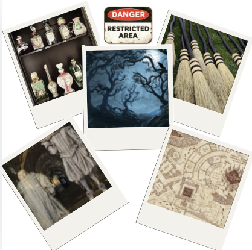

---------------------------------------------------------------------------------------"The most loyal and kindest school of all!"-----------------------------------------------------------------------------------------------
=Student Guide Book=
Warning for Students!

1. Beware of Unattended Potions: Do not drink any potions unless they’re prepared by a qualified professor—or you might end up with an extra arm or an unusual appetite for gnomes!
2. Avoid the Forbidden Forest After Dark: While it may be tempting to explore, remember that the creatures within are not all friendly. Keep your wands at the ready!
3. Mind Your Quidditch Practices: Flying lessons can be exhilarating, but a rogue Bludger could ruin your day—or worse, your broomstick!
4. Watch for House-Elf Mischief: Our house-elves have a knack for playful pranks. Keep your belongings close, or you might find your socks mysteriously vanished!
5. Respect the Ghosts: Some ghosts, like Peeves, are known for their mischief. Avoid provoking them, or you might find yourself on the receiving end of a ghostly prank!
6.Always Check the Map: Make sure to consult the Marauder's Map (if you have it!) before wandering through secret passages. You never know who—or what—might be lurking!